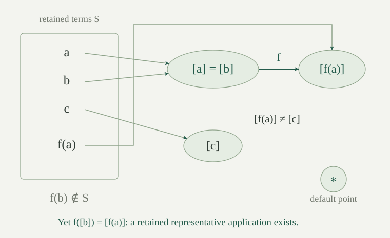

A ground term is a term containing no variables. It is built from constants and function symbols of their stated arities. Fix a language \(L\), and finite sets \(E,D\) of pairs of ground terms. A pair \((s,t)\in E\) requires \(s=t\); a pair in \(D\) requires \(s\ne t\). We call \((E,D)\) a ground equality problem.
A solution is a nonempty \(L\)-structure \(M\) in which every equation in \(E\) and every disequation in \(D\) is true. Write \(s^M\) for the value of a ground term; it needs no assignment. Only equality is being constrained: any relation symbols in \(L\) may be interpreted arbitrarily. Function symbols are total operations, with no assumed injectivity or other algebraic laws.
For example, \(a=b\) forces \(f(a)=f(b)\), so adjoining \(f(a)\ne f(b)\) makes a problem unsatisfiable. We will test such consequences while retaining only finitely many terms.
The subterm set of a ground term is defined recursively by
For a constant the union is empty. Each such set is finite, by induction on terms and finite unions of finite sets. Let \(S\) be the union of these sets for all terms on either side of a pair in \(E\cup D\), and put \(m=|S|\). The set \(S\) is subterm-closed: if \(f(\bar t)\in S\), then every \(t_i\in S\). Indeed, every subterm of a subterm of an input term is again a subterm of that input term; induction in the displayed recursion proves this assertion. Empty input gives \(S=\varnothing\).
More generally, the construction below works for any finite subterm-closed \(S\) containing all input terms. It need not contain \(f(\bar t)\) merely because all the \(t_i\) belong to it.
For a relation \(R\subseteq S\times S\), define its saturation step \(F(R)\) to contain \(R\) together with the following pairs, always with both endpoints in \(S\):
Define the saturation stages by \(R_0=E\) and \(R_{k+1}=F(R_k)\). Each step uses the preceding stage throughout; consequences newly added at a stage may be used at the next one. In particular, \(R_k\subseteq R_{k+1}\).
These are finite tests. To test the last clause for a candidate pair of terms, compare their outer symbols and arities, then inspect their finitely many paired arguments. It does not require searching through all symbols or all terms in the language. For an executable test, assume equality of function symbols of each arity is decidable; the semantic conclusions below do not depend on an effective enumeration of the language.
Put \(N=m^2\). The saturation stage \(R_N\) is fixed: \(F(R_N)=R_N\). Every later stage equals \(R_N\).
There are \(N\) ordered pairs in \(S\times S\). A strict inclusion of finite relations increases their size by at least one. If all of the \(N+1\) inclusions from \(R_0\) to \(R_{N+1}\) were strict, the final relation would have at least \(N+1\) elements, which is impossible. Thus \(R_j=R_{j+1}\) for some \(j\le N\). Applying the same function \(F\) repeatedly shows that every later stage equals \(R_j\), including \(R_N\) and \(R_{N+1}\). This also covers \(S=\varnothing\): there are no pairs to add.
Write \(s\sim t\) when \((s,t)\in R_N\). This is an equivalence relation on \(S\), contains \(E\), and satisfies the following restricted congruence rule:
It is the least relation with these properties: if an equivalence relation \(K\) on \(S\) contains \(E\) and obeys this rule, then \({\sim}\subseteq K\).
Since \(F(R_N)=R_N\), each of the four rules in the step already holds in \(R_N\). The first three give reflexivity, symmetry and transitivity, and the fourth gives the displayed rule. The increasing stages retain every pair in \(E\).
For minimality induct on \(k\) to prove \(R_k\subseteq K\). The initial inclusion is the hypothesis on \(E\). An old pair stays in \(K\); a new reflexive, reversed or transitive pair belongs to \(K\) by its equivalence properties; and a new function pair belongs to \(K\) by its congruence rule and the induction hypothesis for its arguments. Taking \(k=N\) proves the claim.
If an \(L\)-structure \(M\) satisfies the equations \(E\), then \(s\sim t\) implies \(s^M=t^M\) for all \(s,t\in S\). Consequently, if some \((s,t)\in D\) has \(s\sim t\), the equality problem has no solution.
On \(S\), let \(s\mathrel Kt\) mean \(s^M=t^M\). Equality of values is an equivalence relation and contains \(E\). If corresponding arguments have equal values, applying the same interpreted function to those values gives equal results. Thus \(K\) obeys the restricted congruence rule. Minimality gives \({\sim}\subseteq K\). An identified disequation would require its two values both to be equal and to be unequal.
Let \(Q=S/{\sim}\) be the quotient set, and denote the class of \(t\in S\) by \([t]\). Take a new point \(\ast\) distinct from every class, and define the finite model carrier to be the disjoint union \(A=Q\sqcup\{\ast\}\). It is nonempty even when \(S\) is empty.
There are at most \(m\) classes: each class contains an element of \(S\), and the projection \(S\to Q\) is onto. Hence \(|A|\le m+1\). The extra point gives a value for function applications not represented among the retained terms.
Fix an \(n\)-ary symbol \(f\) and a tuple \(\bar a\in A^n\). Call \(f(t_0,\ldots,t_{n-1})\in S\) a represented application at \(\bar a\) if \([t_i]=a_i\) for every \(i<n\), where classes are regarded as elements of \(A\). All represented applications at this tuple have the same class.
If \(f(\bar t)\) and \(f(\bar u)\) both represent the tuple, then \([t_i]=a_i=[u_i]\) for every \(i\). Equality of classes gives \(t_i\sim u_i\). Both applications belong to \(S\), so restricted congruence gives \(f(\bar t)\sim f(\bar u)\). Their output classes therefore agree. If the arity is zero, the argument conditions are empty and the output is the class of that constant, when it belongs to \(S\).
Define the represented-application structure \(M_S\) on \(A\) as follows. For a symbol \(f\) and a tuple \(\bar a\), if a represented application \(f(\bar t)\in S\) exists at \(\bar a\), set \(f^{M_S}(\bar a)=[f(\bar t)]\). If none exists, set \(f^{M_S}(\bar a)=\ast\). The preceding lemma shows that the first rule gives exactly one value, whichever witnessing application is used. Interpret all relation symbols as false.
This defines a total operation for every function symbol, including constants and symbols absent from the input. A tuple containing \(\ast\) has no represented application when that coordinate occurs. For a constant, return its class if its term belongs to \(S\), and otherwise return \(\ast\).
The existence test concerns all represented applications. It does not choose arbitrary representatives of the input classes and test only their application: that term might be absent from \(S\), although another choice represents the same tuple.
For every \(t\in S\), its value in the specified structure is \(t^{M_S}=[t]\). In particular, for all \(s,t\in S\),
Induct on the term \(t=f(t_0,\ldots,t_{n-1})\), with the hypothesis that it belongs to \(S\). Subterm closure puts each \(t_i\) in \(S\); the induction hypothesis gives its value as \([t_i]\). Thus \(t\) itself is a represented application at the tuple of argument values. The defining rule for \(f^{M_S}\), together with uniqueness of the output class, gives \(t^{M_S}=[t]\). This includes constants, which have no arguments. Finally, equality of the two term values is equality of their classes, and that holds exactly when \(s\sim t\).
A finite ground equality problem \((E,D)\) has a solution if and only if no pair in \(D\) is identified by \(R_{m^2}\). When it has a solution, the specified structure \(M_S\) is one, with at most \(m+1\) elements.
If a solution exists, excludes every identified disequation. Conversely, suppose no pair in \(D\) is identified. Every pair in \(E\) is in the closure, so makes its two values equal in \(M_S\). For a pair in \(D\), the same equivalence makes its two values unequal. Thus \(M_S\) satisfies exactly the required equations and disequations. Its nonemptiness and size bound were established in .
With decidable equality on the function symbols, the criterion is an explicit terminating test: collect the finite subterms, perform \(m^2\) saturation steps on their pairs, and check the finitely many pairs in \(D\). No search through possible structures is needed.
The extension to signed relation literals retains these same function operations and checks whether opposite relation demands have congruent argument tuples.
Consider \(E=\{(a,b)\}\), \(D=\{(f(a),c)\}\), with distinct constant symbols \(a,b,c\). Here \(S=\{a,b,c,f(a)\}\), and \(f(b)\notin S\). What value must \(f^{M_S}([b])\) have? Why can choosing \(b\) first give a wrong answer?
Because \([a]=[b]\), the retained application \(f(a)\) represents the input \([b]\). Thus \(f^{M_S}([b])=[f(a)]\), and this equals \(f^{M_S}([a])\). A rule that chose representative \(b\), noticed that \(f(b)\notin S\), and returned \(\ast\) would instead give two answers to the same input class. The represented-application rule avoids that failure by testing whether any retained application has the required input classes.
The problem is satisfiable: on two elements \(0,1\), interpret \(a,b\) as \(0\), \(c\) as \(1\), and \(f\) as the constant function \(0\). Then \(a=b\) and \(f(a)\ne c\).

Let \(a,b\) be distinct constant symbols and \(f\) unary. Are \(f(a)=f(b)\) and \(a\ne b\) jointly satisfiable? Compare this with \(a=b\) and \(f(a)\ne f(b)\).
The first problem is satisfiable on \(\{0,1\}\): set \(a=0\), \(b=1\), and make \(f\) constantly \(0\). Equality of function outputs does not imply equality of their inputs. In the second problem, the input equality forces equal function values by congruence, contradicting the disequation. The saturation rule therefore goes from argument pairs to application pairs, without a converse cancellation rule.
What structure does the construction give for \(E=D=\varnothing\), even if the language has no constants? Does the equation \(a=f(a)\) force infinitely many domain elements?
Empty input gives \(S=\varnothing\), no classes, and the one-element carrier \(\{\ast\}\). Every interpreted function returns \(\ast\), and every relation is false. This is a nonempty structure whether or not ground terms exist in the language.
The cyclic equation also has a one-element solution: interpret \(a\) by its sole element and \(f\) by the sole unary operation. In its finite subterm set \(\{a,f(a)\}\), the equation identifies those two terms. Although applying congruence in the entire term language would also identify \(f(f(a))\), \(f(f(f(a)))\), and further terms, none needs to be added to \(S\). Totality of the constructed operations supplies values for all terms, and the finite saturation already decides the stated requirements.